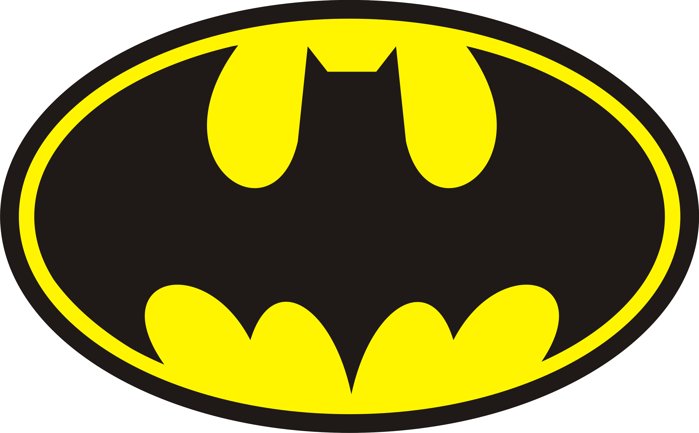

Curriculum Vitae de Bruce Wayne

Datos personales
- Nombre completo: Bruce Wayne
- Fecha de nacimiento: 1/5/1939
- Lugar de nacimiento: Gotham City
Formación académica
-
1956-1961: Universidad del Espantapájaros
- 1952-1956: Instituto de Dos Caras
- 1944-1952: Escuela Primaria del Joker
Experiencia laboral
- 1975-1985: En el paro
- 1965-1975: Cazavillanos y demás chusma
- 1962-1965: Aprendiz de superhéroe
-
Voluntad indomable: No tiene poderes sobrehumanos
conocidos, pero tiene una "fuerza de voluntad" extrema, a menudo ha
sido su escape de la muerte en muchas ocasiones.
-
Intimidación: Es ampliamente conocido que Batman
tiene la capacidad de infundir miedo en los demás, hasta las personas
que lo conocen se sienten intimidados por él. Incluso aquellos que no
tienen miedo (como Superman) sienten temor de Batman.
-
Experto interrogador: Batman es experto en el uso de
técnicas de interrogatorio, el empleo de cualquier cosa, desde los
métodos de aplicación de la ley a la tortura absoluta.
-
Habilidades físicas:A través de un intenso
entrenamiento, una dieta especial, y los tratamientos de
retroalimentación, Batman representa el pináculo de la fuerza física
humana. Sus atributos físicos superan a la de cualquier atleta de
nivel olímpico.
-
Resistencia: Su resistencia es comparable a la de los
mejores participantes del Decatlon Olímpico. Su capacidad pulmonar es
tan grande que puede mantener la respiración bajo el agua durante 3
minutos y 15 segundos.
-
Agilidad: Su agilidad es mayor que la de un acróbata
chino.
-
Experto acróbata: Competente en la gimnasia y la
acrobacia, así como en el arte del Parkour.
-
Experto en artes marciales: Él ha dominado 127
estilos de artes marciales incluyendo Muay Tailandés, Eskrima, Krav
Maga, Capoeira, Savate, Yawyan, Taekwondo, Judo, Jujitsu, Ninjitsu,
Kendo, Esgrima, Kenjutsu, Kali, Bojutsu, Francombat, Boxeo,
Kickboxing, Hapkido, Ala Chun, Shorin Ryu, Silat, Chin Na, Hokuto
Shinken, Kyudo, Aikido, Varma Ati, Jeet Kune Do, Shaolin, Ba Gua, Hung
Gar, Tai Chi, Kung Fu, Kenpo y Karate. Su forma principal de combate
es una mezcla idiosincrásica de Tae Kwon Do, Judo, Muay tailandés,
Karate, Boxeo, Jujitsu, y Ninjitsu.
-
Maestro de armas: A través de su entrenamiento en
artes marciales, se ha convertido en un experto en prácticamente todo
tipo de armamento. Es un espadachín excepcional como es evidente en su
lucha con Ra's Al Ghul. Es capaz de pelear con la mayoría de las armas
cuerpo a cuerpo debido a su dominio de Okinawa Kobudo. Pronto aprendió
las técnicas de expansión arma cuerpo a cuerpo.
-
Maestro del sigilo: Su formación en Ninjutsu le ha
convertido en un maestro en el sigilo capaz de infiltrarse en
instalaciones de alta seguridad con facilidad y sin ser detectado.
-
Experto escapista: Batman ha demostrado en múltples
ocasiones que puede escapar de cualquier tipo de atadura, cuerdas,
cadenas o cualquier tipo de medio tecnologico que usen para detenerlo,
ususalmente permite que lo atrapen para conseguir información y cosas
que necesite para sus investigaciones.
-
Experto mentalista: Ha demostrado que para evitar que
le lean la mente suele poner barreras mentales, como demostro con el
Marciano, tambien para dominar el dolor y evitar desangrados masivos,
todo con el control de su mente.
-
Tirador experto: Debido en parte a su entrenamiento
en Ninjutsu, Batman casi nunca pierde sus objetivos, 9/10 veces tiene
éxito.
-
Genio intelectual: (CI 210) Batman es muy brillante,
prácticamente sin igual, detective, estratega, científico táctico y
comandante, él es ampliamente considerado como una de las mejores
mentes del planeta. Dada su falta de superpoderes, muy a menudo
utiliza la astucia y la planificación para burlar a sus enemigos, en
lugar de simplemente "luchar" con ellos.
-
Erudito: Ha estudiado Biología, Tecnología,
Matemáticas, Física, Psicología, Criminología, Filosofía, Literatura,
Literatura Antigua, Mitología, Geografía, Historia, Ciencias Penales,
Medicina, Medicina Forense, Anatomía, Sistemas de Seguridad,
Ilusionismo, Química avanzada, Ciencias del Deporte, Nutrición,
Mecánica, Computación, Ufología y otro tipo de ciencias; en pocas
palabras, es un Genio Natural, hasta Superman lo considera una persona
no humana.
-
Habilidad como hacker: Tiene capacidad para
infiltrarse en sistemas informáticos con gran facilidad, consiguiendo
así recuperar datos encriptados y desactivar sistemas de seguridad.